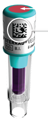

Cycle Information
Back
STERRAD VELOCITY™
Biological Indicator:
Biological Indicator:
STANDARD Cycle: 47 Minutes*
- Single Channel Stainless Steel Lumens
- General medical Instruments
Instruments include, But Are Not Limited To:
- Arthroscope And Laparoscopic Instrument Sets
- Eye Instruments
- Cystoscope Instruments
- Rigid And Semi-rigid Ureteroscopes
- Cameras And Light Cords
- Rechargeable Batteries
- Orthopedic Drills And Saws
- UltraSound Probes/Transducers
Please Reference The User`s Guide For Complete Cycle Information Regarding Recommended Items,
Material And Some Typical Devices That Can Be Sterilized In Each Cycle.
Material And Some Typical Devices That Can Be Sterilized In Each Cycle.
*Cycle Time Are Approximate. AllClear™ Technology May
Increase Process Time By Approximately 5 Minutes.

Barcode
Ensure The Chemical Indicator Color Is Red